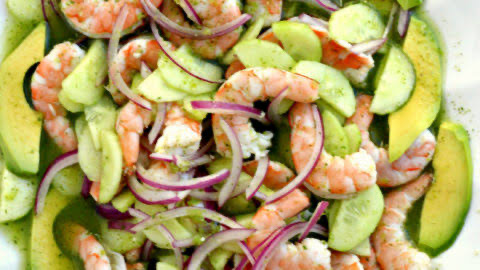
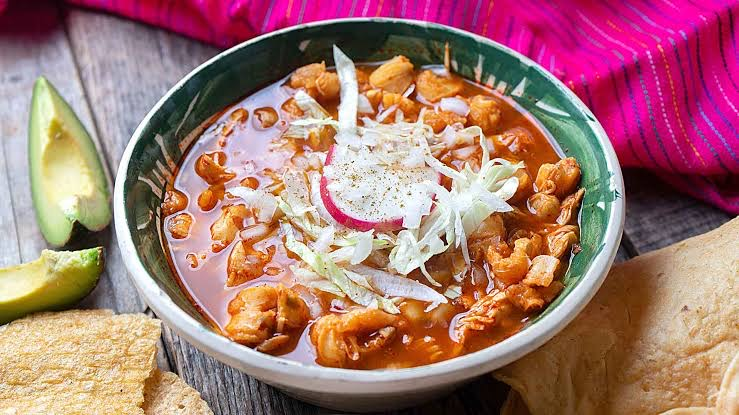

"PLATILLOS MEXICANOS"

De lo que más caracteriza a México es sin duda su sabor, el sazón de cada platillo, su amplia gastronomía y la forma en como se cocina. Es por eso, que a continuación mencionaré algunos de mis platillos mexicanos favoritos y una breve descripción de ellos acompañada de una deliciosa receta.
Aguachile
El aguachile es un platillo típico de la costa occidental de México, se consume principalmente en el noroeste, en un área que comprende los estados de Sinaloa, Nayarit, Jalisco, Sonora y Baja California. En lo personal es uno de mis comidas favorita.

Aguachile
Mole
Uno de los platillos que mejor representa la gastronomía mexicana es sin duda, el mole. Su término proviene del náhuatl molli o mulli, y se refiere a varios tipos de salsas preparadas a partir de chiles y especias. Se elabora desde la época prehispánica a través de mezclas de salsas muy condimentadas, pero al paso de los siglos, los cocineros lo fueron transformando, refinando y adaptando sus recetas con nuevos ingredientes y técnicas.
Mole
Pozole
Entre la gran variedad de sabores que ofrece la gastronomía mexicana, el pozole es uno de los platillos más tradicionales, sobre todo para festejar en reuniones y época de fiestas patrias. De origen prehispánico, el pozole es un caldo con granos de maíz y carne de cerdo, aunque se puede preparar con pollo, y una guarnición de lechuga, cebolla, rábanos y orégano, que se come con tostadas de maíz y la opción del chile.

Pozole
Sopes
Los sopes platillo tradicional mexicano, tiene su origen en las culturas prehispánicas que habitaban la zona centro y sur de nuestro país; con el paso del tiempo, este platillo se extendió a lo largo del país. Consiste en un círculo de masa de maíz, generalmente se acompañan con frijoles, crema, queso rallado, cebolla y salsa pero se le añaden diversos ingredientes según la región.
Sopes
Tacos
Los tacos es una preparación culinaria muy popular en México que consiste en una tortilla, generalmente de maíz, que se dobla para contener dentro diversos ingredientes y algún tipo de salsa. Es el antojito más representativo de la cocina mexicana y se puede encontrar en todos los lugares de la república. Estos pueden tener diversos ingredientes y existen diversas presentaciones. Como los tacos dorados o de canasta y varían según su preparación.
Tacos